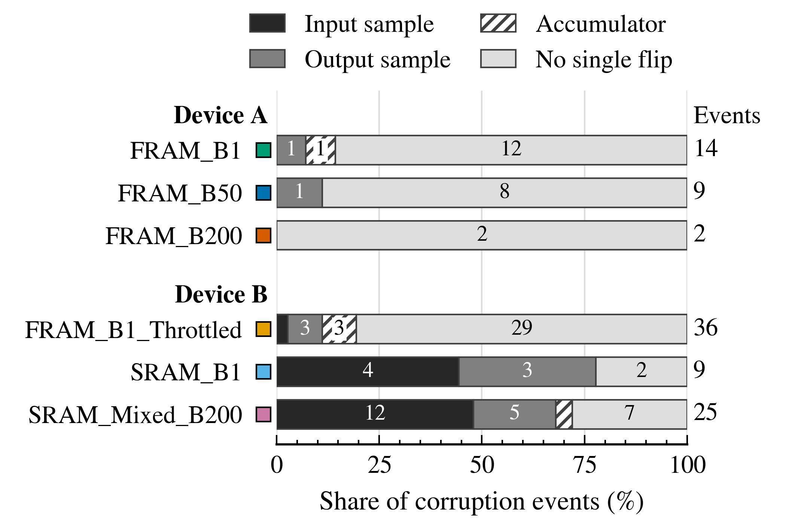

The relation, and whose it is
Published flux-selection methodology writes the share of surviving work cycles as one minus the probability that an interrupt arrives within the cycle, evaluated over the fluence delivered during it (Zimmaro et al., RADECS 2022). For interruptions arriving at a constant rate it reduces to the exponential, the survival form long used in checkpointed computation (Young 1974; Daly 2006):
\(\sigma_{\mathrm{cyc}}\) is the cross section for losing a work cycle and \(\phi W\) is the fluence one cycle receives, so a cycle survives or not according to the exposure it accumulates while it runs. Writing the exponent this way holds the cross section constant in flux, which is the case while each strike acts on its own.
The published method was developed for system-level proton and mixed-field testing, where the work cycle was fixed by the application and the survival term was computed from a measured cross section rather than counted. The companion paper varies the work cycle 41-fold on heavy ions at component level, counts the surviving cycles directly, and charges the recovery time. Those three things, and the limit on a counted interrupt rate below, are what it adds.
The measurement behind \(\sigma_{\mathrm{cyc}}\)
Six firmware builds of an FIR filter ran on the MSP430FR6989 at a flux held within 11% of \(5\times10^{4}\) cm⁻² s⁻¹ and one LET (7.9 MeV·cm²/mg), with the work cycle set by batch size and clock choice from 20 ms to 814 ms. A lost cycle is one in which a host-detected interrupt occurred, whatever the cycle returned. Of 20,459 cycles attempted, 588 were lost. The fraction that survived uses neither \(\sigma_{\mathrm{cyc}}\) nor \(W\), so comparing it against the relation tests the formula rather than restating it.
| Build | \(W\) | Attempted | Lost | \(\theta\) measured [95%] | \(\theta\) from the fit |
|---|
A fit on the counted fractions, taking each build at its own flux and work-cycle time, gives one cross section shared across all six, and it carries across the whole range. Fitted to the three pure-FRAM 16 MHz builds alone, where storage and clock are fixed while \(W\) still spans the full range, it gives \(1.49\times10^{-5}\) cm².
Two assumptions, tested
The fit rests on two assumptions, and both were tested against the direct count rather than taken on faith. The first is that one cross section serves every build. Giving each build its own value describes the counts no better than the shared one, by a likelihood ratio of G² = 6.4 on 5 degrees of freedom and p = 0.27, and the same holds within the three pure-FRAM 16 MHz builds, where only \(W\) moves and p = 0.56. The second is that a cycle's risk of interruption stays constant while it runs. A free-shape Weibull survival law returns a shape β = 0.98, with a 95% interval of 0.92 to 1.04, and the pure-FRAM builds alone give the same 0.98 (0.90 to 1.06). The constant-risk form above is the case β = 1. A long work cycle therefore faces the same risk per unit fluence as a short one, with no added risk from its length. A build with a longer cycle loses a larger share only because each cycle receives more fluence, and that agreement across a 41-fold range of \(W\) is what lets \(\sigma_{\mathrm{cyc}}\) measured at one work cycle carry to another.
Which cross section feeds the relation
The campaign produced three candidates. \(\sigma_{\mathrm{cyc}}\) counts lost cycles over the fluence delivered while a cycle was running. The functional-interrupt cross section from the device's reset counter, \(\sigma_{\mathrm{FI}}\), and the one from the host's recovery record, \(\sigma_{\mathrm{det}}\), count over the full beam-on fluence. Both give higher counts and higher exposures, and the second effect wins: beam-on fluence credits exposure during windows in which no work cycle could be interrupted. The host's record gives a rate of 0.42 s⁻¹ at the matched flux against the fitted 0.78 s⁻¹, and the curve it implies lies above every measured point. A cross section over full beam-on exposure will overstate the clean-cycle fraction in proportion to how much time the device spends outside its work cycle, whatever puts it there.
Firmware comparison and the storage signature
At the reference LET and flux, the corruption-event cross section spread 6.1-fold across the six builds, from \(4.1\times10^{-7}\) to \(2.5\times10^{-6}\) cm². The functional-interrupt cross section, counted from each device's own reset counter and comparable on five of the six builds, spread only 1.4-fold, from \(7.7\) to \(11.1\times10^{-6}\) cm², with a count-weighted pooled rate \(\sigma_{\mathrm{FI}}=9.4\times10^{-6}\) cm². The device stops delivering results at nearly the same rate whichever firmware it runs. What corrupts a result once it keeps running depends far more on how that firmware stores its data.
A single-bit-flip test locates the fault site behind each corruption event. Of the 34 events in the two SRAM builds, 16 are reproduced by a single flip in an input sample, against 1 of the 36 events of FRAM_B1_Throttled on the same device, so the signature tracks storage rather than the device (Fisher exact, \(p<10^{-4}\)). No single flip reproduces 84% of the 61 FRAM events, against 26% of the SRAM events, and 30 of the 35 matches found sit at a stored sample rather than in the arithmetic, 24 of them in the SRAM builds.

The companion paper's Fig. 3. Each bar is one build's corruption events, shaded by the site at which a single bit flip reproduces each one, lightest where no single flip does. The colored key beside each build matches its color in the paper's other figures.
Recovery time in the flux choice
Charged for the time it spends recovering, the campaign spent 34% to 72% of its test time buying no countable exposure, depending on the build. Let \(\tau\) be the mean recovery time per lost cycle. The duty factor is the surviving cycle time over the sum of cycle time and the recovery expected per cycle:
Setting \(\tau=0\) returns \(D=\theta\), so this extends the published relation rather than replacing it. \(D\) is the test-time counterpart of the availability that system-level guidance computes for a mission from downtime and cross section (Coronetti et al., TNS 2021). ESCC 25100 asks that a comparable active-time share be measured and applied to a cross section.
The charge a build pays is \((1-\theta)\tau/W\). A short cycle carries a high ratio of recovery time to cycle time, but it also loses a correspondingly smaller share of its cycles, and the two effects cancel: with \(1-\theta\) rising in proportion to \(W\), the work-cycle time drops out and the charge is left to \(\tau\). FRAM_B1 runs a 20 ms cycle and takes 1.17 s to recover from a loss, about sixty cycle-lengths, but loses only 1.6% of its cycles, and 1.6% of sixty is close to one, so it spends about as long recovering as computing. Its clean-cycle fraction is 0.98 and its duty factor 0.51. The two builds that keep the most cycles rank third and fourth on duty factor. Counting only the cycle time that returned a clean result, against beam-on time, reproduces that order with no model involved.
\(\tau\) is measured, as the mean episode duration times the episodes a lost cycle carried, and runs 0.58 to 1.28 s here. Every build settled in the same 0.165 s when the automatic path worked; the cost lives in the tail, where a failed resynchronization costs a host timeout of five or ten seconds. Automatic recovery restored function in 95.3% of cases scored on delivered work, manual recovery in 96.4%, indistinguishable; scoring every censored case as a failure gives 71.4%. A campaign that pauses the beam to recover does not escape the charge, since \(\tau\) then moves from its beam-on budget to its facility budget: an escalated recovery cost a mean of 93.7 s against a median pause of 84.6 s.
Hidden interrupts and the limit of a counted rate
While the host is inside a recovery episode it is waiting on the device rather than watching for new faults. A strike that lands after one interrupt, but before the host has resynchronized, resets the device again without opening a new recovery episode, so it is never counted. This is the counting loss known from radiation detectors (Knoll). A 3.76-fold fall in a counted cross section over a 10.5-fold rise in flux has been measured this way on a system recovered by an external watchdog (Zimmaro et al.).
The recovery page estimates the share of interrupts that hide an independent strike, for a detection window \(t_{\mathrm{det}}\), with the expression below. It is a plain expectation for independent strikes, not a fit to these data.
The device's own reset counter records these hidden resets, but it also credits repeated resets after a single event, so its 15 to 30% excess over the host's count is not all hidden strikes. The two can be told apart by rate, since the firmware cannot reset itself and only independent strikes become more frequent as flux rises. In 1,856 interrupts where the host waited a fixed 0.25 s before reading, the share carrying a second reset rose with the interrupt rate, consistent with independent strikes landing in the wait. About one interrupt in eleven reset again whatever the rate, which looks like a property of the event rather than of the beam, and fourteen reset loops of 21 to 62 resets each were recorded, one of them at the comparison condition.
Most hidden strikes, though, fell before the host had even detected the first reset. Split by when the host was watching, at the comparison condition:
| Phase | Share hiding a second reset |
|---|
About a tenth of the four FRAM builds' interrupts were hidden this way at the test flux (6 to 15%), with about 2 points of it arising after detection and the rest before. Their true interrupt rate likely sits about a tenth above the host-detected rate and a tenth below the reset-counter rate. Pausing the beam or closing a shutter on detection (Wilcox et al. 2017; TI's MSP430FR5969-SP report) would remove only those 2 points. The latency before detection remains, and here it was set by the host's own wait and timeouts, so detection latency is the lever, not recovery under beam.
Hidden strikes bias a counted interrupt rate low, and with it a projected mission interrupt rate. They do not bias the clean-cycle fraction or the corruption-event rate, since both are counted only on cycles that survived. Three measured inputs and one choice set a dynamic test's flux and work cycle: the lost-cycle cross section from a pilot, the recovery time per lost cycle, the detection latency, and the targeted share of surviving cycles.
Quantities
As defined in the companion paper's Table III, with the time base each rate is measured on.
| Quantity | Meaning | Where measured |
|---|---|---|
| Beam-on time | Time the beam was on the device. | paper §III-A |
| In-cycle time | The part of beam-on time spent inside work cycles. | §III-B |
| Recovery time | The part of beam-on time spent restoring the device after an interruption. Recoveries that paused the beam are counted separately. | §III-A |
| Detection latency | Time from a reset to the host detecting it, in which a further reset opens no new recovery episode. | §IV-B |
| Countable exposure | Fluence delivered during work cycles that survive. | §IV-B |
| \(W\) | Work-cycle time, from input reception to output transmission, measured event-free. | §II-B |
| \(\theta\) | Clean-cycle fraction, the share of attempted work cycles that survive. | §IV-A |
| \(\phi\) | Flux, cm⁻² s⁻¹. | §II |
| \(\sigma_{\mathrm{cyc}}\) | Cross section for losing a work cycle, cm², fitted to the direct count of surviving cycles; \(\sigma_{\mathrm{cyc}}\phi\) is the lost-cycle rate per second of in-cycle time. | §IV-A |
| \(\sigma_{\mathrm{FI}}\) | Cross section for functional interrupts, cm², counted from the device's reset counter over beam-on exposure. | §III-B |
| \(\sigma_{\mathrm{det}}\) | Cross section for host-detected interrupts, cm², counted from the recovery record over beam-on exposure; matches \(\sigma_{\mathrm{cyc}}\) in neither count nor exposure basis. | §IV-A |
| \(\tau\) | Mean recovery time per lost cycle. | §IV-B |
| \(D\) | Duty factor, the share of in-cycle plus recovery time that yields countable exposure. | §IV-B |
| \(\Phi\), \(T\) | Target fluence and the wall-clock time to reach it, \(T=\Phi/\phi\). Site-only conveniences. | this site |
Counted errors are functional interrupts and corruption events. The paper avoids SEFI and SEU for them because single-particle attribution cannot be established for these events. The site follows.
Facility flux ranges used by the tools
Sourced for the achievable-range line on the first page. TAMU is excluded because its published materials give no numeric flux ceiling.
| Facility | Heavy-ion flux (cm⁻² s⁻¹) | Source |
|---|
References
- Hudson, Hunnicutt, Loveless, "Design Strategies for Dynamic Single-Event Effect Testing of Algorithmic Computation," IEEE Trans. Nucl. Sci. (RADECS 2026). The companion paper; every number on this site traces to it.
- Zimmaro et al., "Radiation testing of complex systems: a flux-selection methodology," RADECS 2022; and the 2024 follow-up. The flux-selection method.
- Young, "A first order approximation to the optimum checkpoint interval," Commun. ACM, 1974; Daly, "A higher order estimate of the optimum checkpoint interval," Future Gener. Comput. Syst., 2006. The survival form.
- Coronetti et al., IEEE Trans. Nucl. Sci., 2021. Availability from downtime and cross section; ten duty cycles between losses of function.
- ESCC Basic Specification No. 25100. Active-time share and the dead-time cap.
- Knoll, Radiation Detection and Measurement. The counting loss from a second strike landing inside a detector's dead time, the mechanism behind a hidden interrupt.
- Wilcox et al., NASA GSFC 2017; Texas Instruments MSP430FR5969-SP heavy-ion report. Shutter arrangements that remove recovery from the exposed window.